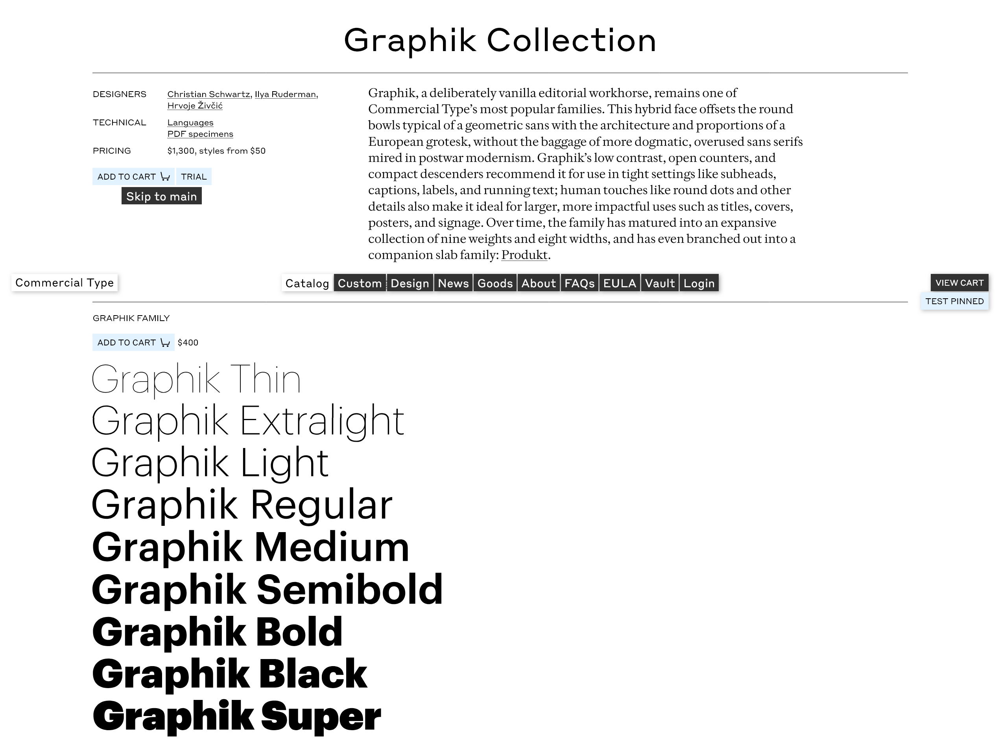

Descrição:
Designer: Christian Schwartz
Descrição retirada do site:
Graphik, Commercial Type’s most popular typeface, was originally not intended for release. “When I first started working on it,” recalled designer Christian Schwartz, “I just wanted a plain, unfussy typeface to use in my occasional forays into graphic design, and for utilitarian tasks in my own studio: invoices, contracts, and labels for presentations. I suppose I shouldn’t have been surprised when clients kept wanting to license it after I told them it wasn’t really for sale.”
Encountering modernism
Although Schwartz started drawing Graphik in 2007, its foundations had been laid much earlier. “One of my earliest memories of letters as shapes,” said Schwartz, “was on trips to Boston with my father when I was five or six, in the early ’80s. We would usually drive through Cambridge on the way to Watertown, where the cameraman he worked with would help him film his stacks of drawings into animation.” Buildings along the side of the road were identified with giant Helvetica numbers, taller than the doorways. “At this scale,” Schwartz continued, “I started to notice the particularities of the letterforms: the subtle angle on the upper left of the 5, and the sinuous curve on the spine of the 2.” He described signage in Boston in those days as an eclectic jumble of hand-lettering from the 1950s and 1960s, mixed with Helvetica—the clean, modern alternative—in different kinds of plastic: vinyl on windows and dimensional letters internally illuminated in white or vermillion, usually in bold and almost always in all caps.
Schwartz’s father, who worked out of a home studio, always had sheets of Helvetica dry-transfer lettering on hand because it was the default typeface for titles and labels on maps. “My taste in letterforms was much more baroque at the time,” said Schwartz. He quickly skipped over Helvetica and its boring peers in the Letraset and Chartpak catalogs, preferring to pore over more exciting alphabets like Thompson Quillscript and Frankfurter Highlight.
Helvetica was so ubiquitous throughout Schwartz’s childhood that by the time he started design school at Carnegie Mellon University in 1996, he couldn’t imagine using it. “It felt like a non-choice choice, something you’d only go for if you didn’t care about type.” Schwartz’s Basel-trained professors reinforced this, instilling in him an appreciation for Univers as the more sophisticated Swiss grotesk. Nevertheless, his default sans at the time remained the quintessentially American Trade Gothic. “The more I saw of European modernist design,” Schwartz said, “the more I was able to appreciate the nuance and the subtlety of the letterforms, and how their plainness could facilitate expressive graphic design.” Posters and editorial layouts by designers like Armin Hoffman showed powerful imagery paired with bold, direct, and surprisingly plain typography. In Schwartz’s final year at Carnegie Mellon, he lucked into a freelance gig designing forms for the admissions office and was forced to confront his refusal to use Helvetica head-on: Helvetica Neue was the university’s institutional typeface. He finally had to learn how to typeset Helvetica, and found that with proper tracking, it could actually work well at smaller sizes.
“As I started working as a type designer, I realized that the European grotesk genre was much bigger than just Helvetica and Univers,” Schwartz said. “I came across more and more alternatives from other foundries that never approached the popularity of these two, while competing more or less directly with them.” These included Folio (1957–1962, Konrad Bauer & Walter Baum for Bauer), Neuzeit-Buch S (1959–66, Arthur Ritzel for Stempel, based on Wilhelm Pischner’s geometric sans Neuzeit Grotesk, cut by Stempel in 1928), Recta (1958–61, Aldo Novarese for Nebiolo), Permanent (1962, Karlgeorg Höfer for Ludwig & Mayer), URW Grotesk (1980s, Hermann Zapf for URW) and Forma (1966–70, Aldo Novarese for Nebiolo). An abandoned attempt to revive Recta made Schwartz realize he wanted to synthesize something new from these influences rather than finding the right “lost” typeface to bring back to life.
Schwartz wanted a “vanilla” typeface that could be used for expressive graphic design—not necessarily just modernist-inflected design—but that didn’t carry the baggage of being ubiquitous, bringing every previous usage along with it. “Helvetica seems inevitable in hindsight,” he thought, “but what if the evolution from typefaces like Venus and Schelter & Giesecke Grotesk, passing through Akzidenz Grotesk to Neue Haas Grotesk, had taken a different path?” Schwartz wanted to emphasize warmth, friendliness, and rationality, so he brought in some influence from geometric sans serifs, leading to rounder bowls, blunter apexes (aside from the pointy Z z 7), a simpler form for G R K k, and, importantly, round dots for i j and punctuation. At the heavy end of the weight spectrum, he was also influenced by Paul Renner’s Plak, a heavy poster face loosely related to Futura and released by Stempel in 1930 only as woodtype. “There was an appealing crudeness to this family,” he said, “and I was particularly interested in how Renner managed to keep a consistent overall color to text in spite of the stroke weights being pretty inconsistent from letter to letter.”
Graphik ended up with nine weights. The thinnest and heaviest are spaced for display, but the core weights have more generous default spacing so that the family can work for text without users needing to adjust the tracking. “Years of working with magazines,” Schwartz explained, “have taught me that designers are more likely to tighten a headline that feels too loose than loosen a block of text that is set too tight.”
Schwartz gradually arrived at the realization that refusing to license the family was “ridiculous.” Early versions of Graphik were used by Robert Priest and Grace Lee for Condé Nast Portfolio, Chris Martinez for T: The New York Times style magazine, Project Projects for signage for the Yale Museum of Art, and Meirion Pritchard for Wallpaper*. Graphik was part of the library when Commercial Type debuted at the beginning of 2010, and after mostly finding a home in editorial design at first, it slowly gained a foothold in corporate design, too.
Graphik’s eight widths in nine weights.
The Swiss masters of poster design—Emil Ruder, Josef Müller-Brockmann, Armin Hofmann, and their peers—commonly used flat-sided condensed sans serifs, often drawn to fit, to maximize both height and tightness in their display type. Schwartz realized he could harmonize the narrow widths with the original by keeping the roundness of the tops and bottoms of round bowls more or less consistent while elongating the straight sides, rather than squeezing the curves into progressively narrower ovals. “This helped me replicate the evenness and density of the poster lettering,” he said.
After exploring the outer bounds of weight, he was curious to push the condensed forms narrower and narrower until they would become too abstract to be readable. The seven additional widths were each created with specific uses in mind.
Graphik Compact is designed for efficiency in copyfitting. It can be used for both headlines and text to save space without the letterforms looking like they have been condensed, and it’s also useful for interface elements in digital design.
Graphik Condensed is intended to be an all-purpose condensed sans for editorial and web use, as well as for corporate design, wayfinding, and app interfaces. And with some additional tracking, it can also be used for running text.
Graphik X Condensed is effective for newspapers and magazine design and can be used at a wide range of sizes.
Graphik XX Condensed, with its larger minimum point size, works for the biggest headlines in a newspaper. It can also be used more generally for book covers, signage, and magazine layouts.
Graphik XXX Condensed is a poster face, best for “screamers” (an old British term for big, tabloid headlines) and feature spreads in magazines.
Graphik XXXX Condensed lives at the edge of readability, designed for posters, album covers, and other situations where the text can start to be more abstract. “This width was originally drawn on a dare from Abi Huynh,” Schwartz recalled. “He was working on our PDF specimens and I was sketching the XX Condensed, which was originally planned as the narrowest width, and he thought it could be twice as narrow.”
Graphik Wide was also Huynh’s idea: “If you’re going to push it that narrow, you’ve got to go in the other direction, too.” This width is purely expressive, designed to take up space. As round bowls get wider, the forms will naturally get squarer to help keep the spacing even; Schwartz found it a challenge to resist this tendency and keep the rounds looking round.
After building out an initial version of the narrower widths for Bon Appétit and Esquire in 2011, they languished until Schwartz enlisted Hrvoje Živčić to help complete the families. Živčić polished the uprights and added italics, and the six narrow versions were released in 2017, followed by Graphik Wide in 2018.
As the widths get narrower, the tops and bottoms of round bowls keep their shape. The radii shrink and the flat sides get longer to fill the space and keep spacing tight.
If the sides didn’t get flatter, the rounds would become oblong as they get more condensed.
Graphik prioritizes aligning the stroke endings, which gives an unusual openness through the middle. It’s common to close the apertures in a condensed sans to keep the overall density more even, as seen in Druk X Condensed Super.
As the widths get narrower, more and more of the stroke endings are able to align, for a clean and rational appearance. The strong horizontal axis created by this alignment plays against the vertical rhythm, keeping the overall texture from becoming too repetitive.
With more open tracking and a different range of weights, Graphik managed to give a different feeling in a top-to-bottom redesign by design director Anton Ioukhnovets after editor David Granger was replaced in 2016.
Over the years, Curcurito and Pierre used Graphik as a raw material for all kinds of experimentation, including this laser-cut lettering from the May 2015 issue.
Bon Appétit was an early user of the narrow widths of Graphik, slightly customized, as shown on this cover from November 2012 that uses five widths of the family. Design director: Alex Grossman. Art director: Elizabeth Spiridakis Olson.
Bon Appétit cover, January 2013, using two widths of Graphik. Design director Alex Grossman, art director Elizabeth Spiridakis Olson.
Esquire brought the full (then-unfinished) range of widths of Graphik in at around the same time, using them in bold and assertive ways as shown on this cover from October 2012 by design director David Curcurito and art director Stravinski Pierre.
With more open tracking and a different range of weights, Graphik managed to give a different feeling in a top-to-bottom redesign by design director Anton Ioukhnovets after editor David Granger was replaced in 2016.
Over the years, Curcurito and Pierre used Graphik as a raw material for all kinds of experimentation, including this laser-cut lettering from the May 2015 issue.
Bon Appétit was an early user of the narrow widths of Graphik, slightly customized, as shown on this cover from November 2012 that uses five widths of the family. Design director: Alex Grossman. Art director: Elizabeth Spiridakis Olson.
Going International
As Graphik grew in popularity, Schwartz thought its underlying concept and approach could adapt to other scripts. Ilya Ruderman and Panagiotis Haratzopoulos drew Cyrillic and Greek extensions in 2015; Waël Morcos and Khajag Apelian added Graphik Arabic in 2017; and 2020 marked the release of Armenian by Apelian, Georgian by Yury Ostromentsky, Hebrew by Yanek Iontef and Daniel Grumer, and Thai by Smich Smanloch and Anuthin Wongsunkakon.